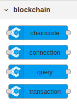
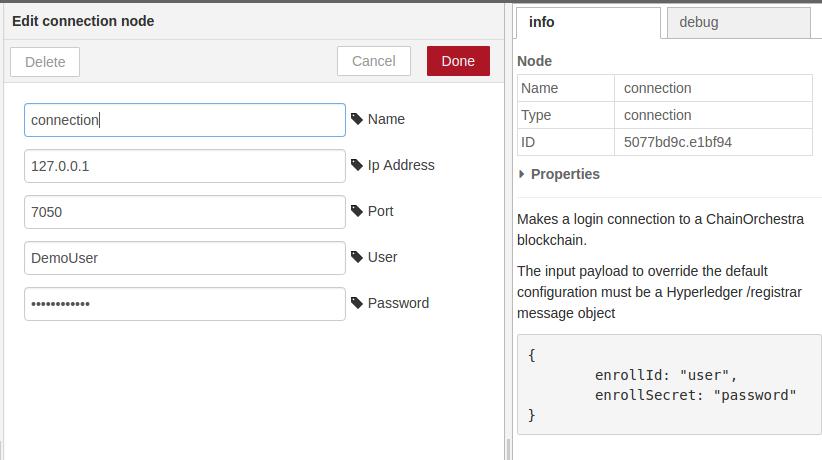
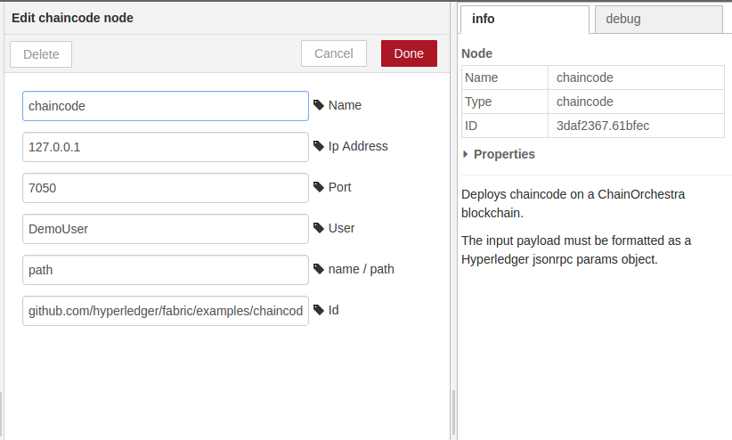
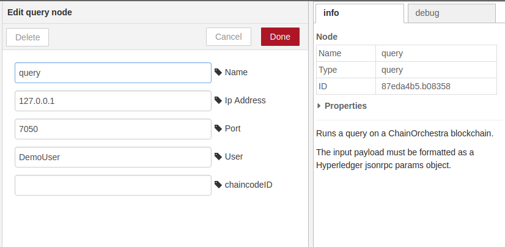
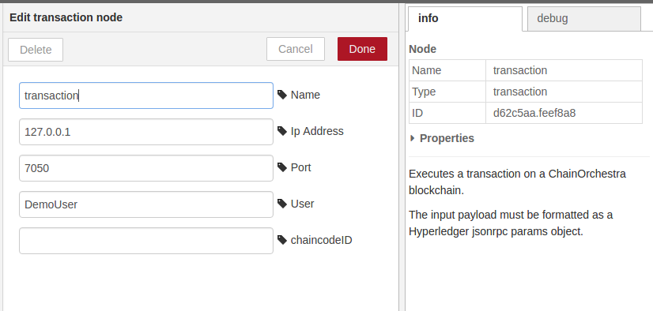

ChainOrchestra flow nodes

Use the ChainOrchestra flow nodes to wire blockchain queries and transactions in a Node-RED flow graph, as in the following samples for the
guest registration example
.
The
gate flow
handles the gate operations in the guest
registration
live demo page.
The
guests list flow
displays a list of registered guests in the debug log.
The
Connection node
makes a login connection.

The
Chaincode node
deploys chaincode.

The
Query node
runs a query.

The
Transaction node
executes a transaction.
